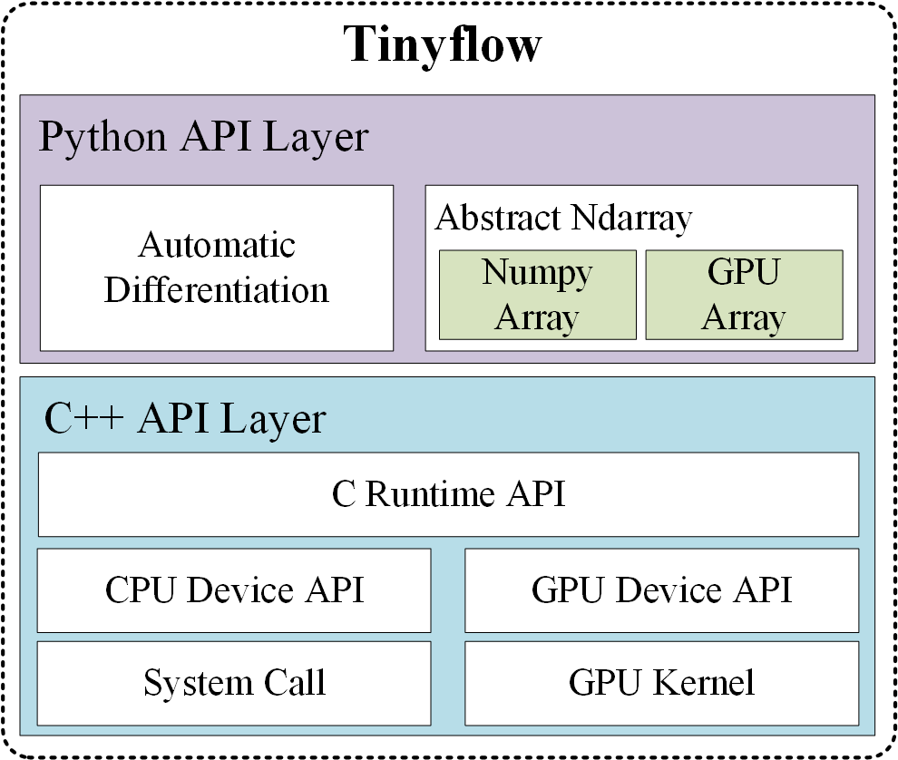
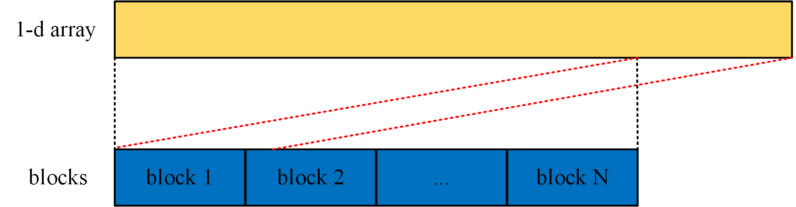

In recent years, thanks to the rapid growth of computing power, deep learning has blossomed. The increase in computing power is largely due to the GPUs. As we all know, the current popular deep learning frameworks such as tensorfow, pytorch, mxnet, etc. all support GPU acceleration. In order to explore the implementation principles behind the deep learning framework, this blog post will attempt to build a simple deep learning framework - Tinyflow. We will build a general automatic differentiation framework in which you can add any custom operator. To keep it simple, Tinyflow only implements the operators necessary for multilayer perceptron (MLP) models (such as MatMulOp, ReluOp, SoftmaxCrossEntropyOp), and of course it supports the addition of any other operators (such as ConvOp). At the bottom, we will use GPUs to accelerate matrix operations. Although compared to the mature deep learning framework, Tinyflow is very simple, but it does have the two core elements necessary for deep learning framework: automatic differentiation and GPU operation acceleration.
Understanding the content of this blog post requires knowledge of CUDA programming. For the basics of CUDA programming I recommend the book Professional CUDA C Programming. Of course, you can also access the online documentation of CUDA Toolkit.
Overview
Tinyflow is written jointly by Python and C++. The automatic differentiation framework is written in Python and provides various operators required for building neural network models (such as AddOp, MatMulOp, ReluOp, SoftmaxCrossEntropyOp, etc.). Tinyflow uses GPU to accelerate a large number of matrix operations involved in automatic differentiation framework.
Below is the architecture of Tinyflow. Python Layer API provides the implementation of automatic differentiation framework and abstract n-dimensional array interface. When we start training a network built with Python APIs, Tinyflow will automatically call GPU Kernel functions for complex matrix operations implemented by C++.

Implementation details
The principles behind Tinyflow are very simple, they are automatic differentiation and GPU acceleration.
Automatic Differentiation
Automatic differentiation is the core of all deep learning frameworks. It is automatic differentiation that frees us from tedious gradient calculations, allowing us to focus on building network models. In this blog post we will not explain in detail the principle of automatic differentiation. If you don’t know what automatic differentiation is, please refer to my blog post Automatic Differentiation Based on Computation Graph.
GPU Operation
Because multi-dimensional arrays in C language are physically stored row-first and continuously. So in many cases we will use one-dimensional CUDA threads to process a two-dimensional matrix or a one-dimensional vector. To limit the use of GPU resources, we can define the following macros.
1 | #define MAX_THREADS_NUM 512 |
CUDA_1D_KERNEL_LOOP will loop through all the data. The schematic is as follows.

Since there are many GPU OPs involved, the GPU OPs will not be described in detail here, but several classic kernels are described. You can find all the GPU OPs code here.
As an example, let’s look at a kernel with a matrix addition. In the kernel we can think of the matrix as a one-dimensional array, so we can quickly write out its kernel based on our defined CUDA_1D_KERNEL_LOOP.
1 | __global__ void matrix_elementwise_add_kernel(float* matAData, float* matBData, float* outputData, int count) { |
The Kernel of Softmax OP is relatively complex. We will use a CUDA thread to process a row of data in the matrix.
1 | __global__ void matrix_softmax_kernel(int nRow, int nCol, float* inputArr, float* outputArr) { |
MLP Model
Based on the automatic differentiation framework we built and the OP with GPU acceleration, we can quickly build a MLP model. Below is the code how to build a 3-layer model.
1 | W1 = ad.Variable(name="W1") |
MLP Model for MNIST
After we implement all the GPU operation we can see the significant performance gain. Below is the training result I ran on my personal computer with a single Quadro K620 GPU with 2G global memory.
| Softmax Regression | Multi-layer NN | |
|---|---|---|
| Epoch | 10 | 10 |
| Numpy Accuracy | 92.23% | 97.17% |
| Numpy Time | 2.0056s | 7.4211s |
| GPU Accuracy | 92.23% | 97.09% |
| GPU Time | 1.5424s | 2.9890s |
We can find that GPU training can improve the efficiency of training, and the more complex the model is, the more obvious the effect is.
本博客所有文章除特别声明外, 均采用CC BY-NC-SA 3.0 CN许可协议. 转载请注明出处!
关注笔者微信公众号获得最新文章推送